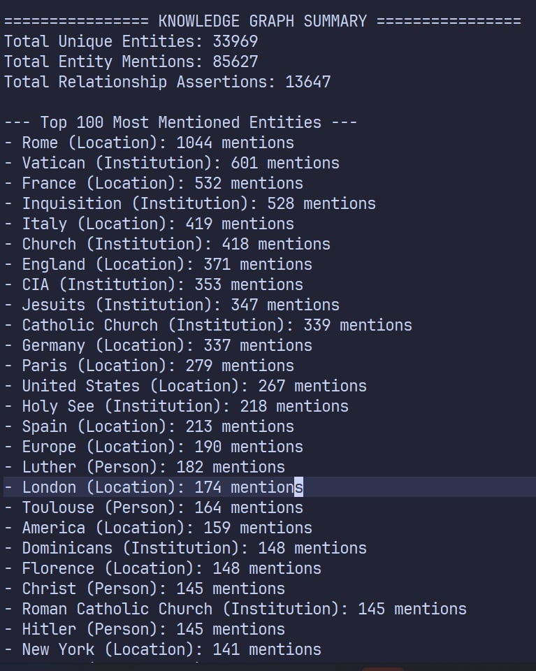
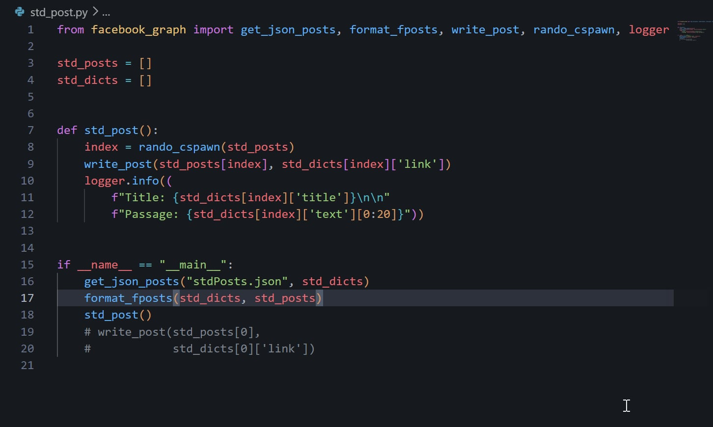
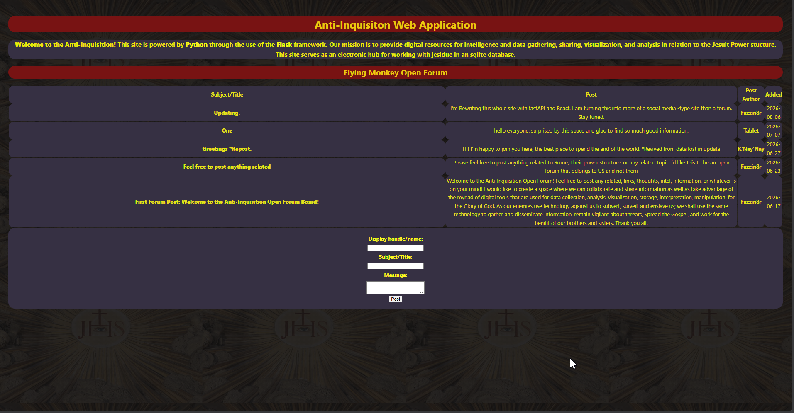
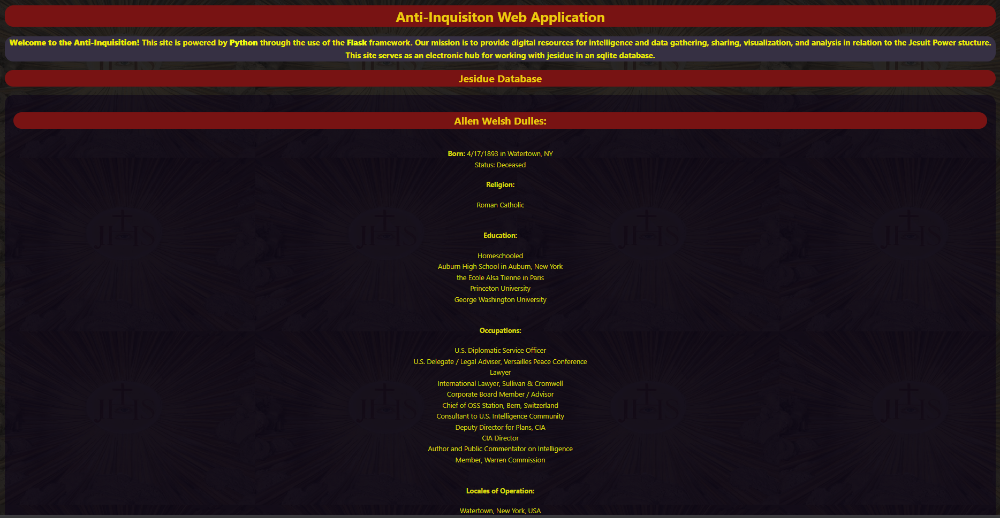
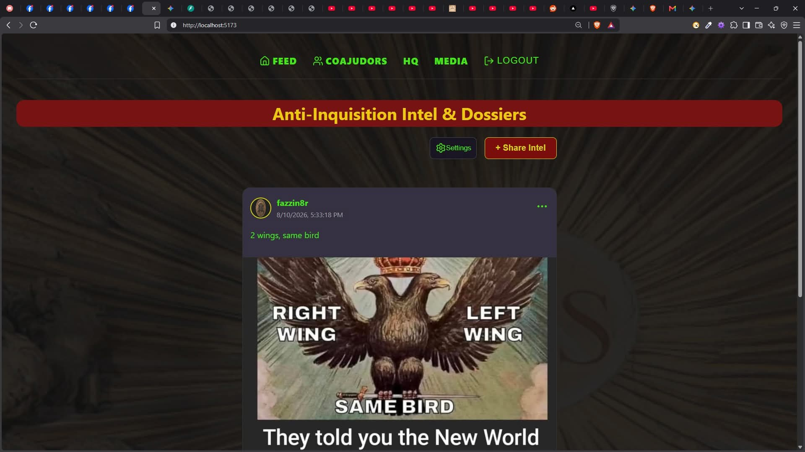

Chris Fazzino's Development Projects
Live Projects

All Roads Database / Knowledge Graph
A database that maps the relationships between people, institutions, places, events in world history in relation to Rome.
Github
Facebook Automation
A codebase to be used in conjunction with cron or Systemd
Learn moreAnti-Inquisition HQ Project Cards
Project cards from a website I created thats geared more towards promulgating research and content produced by myself and other creators within my purview.
Anti-Inquisition Projects
Flying Monkey's Open Forum
An open forum I created as an experiment with Flask. It Will be updated in the futurer with the Functionality to allow people to post pictures as well.
Open Forum
Jesuit Coajudors
Dossiers on a few people connected to the Jesuit order and their activities.
Jesuit CoajudorsIn Development
Facebook Automation
Automation for a facebook page associated with a friend's show and published books that is written in python and is meant to be used with cron or systemd to automate the posting of content to the page.
GitHub
Intel Sharing Social Media App
A Website similar to Facebook or instagram where people can share Intel in the form of PDFs, images, text, links, and more
GitHub